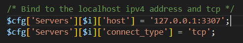

How to change the MySQL port in xampp
For changing the MySQL port in xampp follow these steps :-
i)Go to “C:\xampp\mysql\bin” folder and edit the file “my.ini”
ii)Change the port of mysql from 3306 to your choice (here I am changing to 3307)
# The following options will be passed to all MySQL clients
[client]
# password = your_password
port=3307 #change this port from 3306 to 3307
socket="C:/xampp/mysql/mysql.sock"
# Here follows entries for some specific programs
# The MySQL server
default-character-set=utf8mb4
[mysqld]
port=3307 #change this port from 3306 to 3307
iii)Go to “C:\xampp\phpMyAdmin” folder and edit the file “config.inc.php”
iv)Add port of mysql to the host ip address (here changed port is 3307)
Replace the above server host by code given below (enter your mysql port)

Congratulations! Now you are able to access your phpmyadmin dashboard.